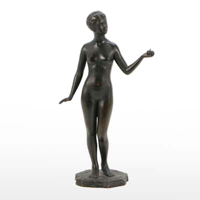

OUTPRICEDCast Bronze Sculpture of Standing Female Nude After T. W. Wright
Small cast bronze (or bronze-finish spelter) figure of a standing nude female holding an a
14h left
Current bid$101 · 23 bids
Est. value$94
Your max bid$19
All-in at max$56
Projected close$159
Margin at bid−$57
Details & price history →